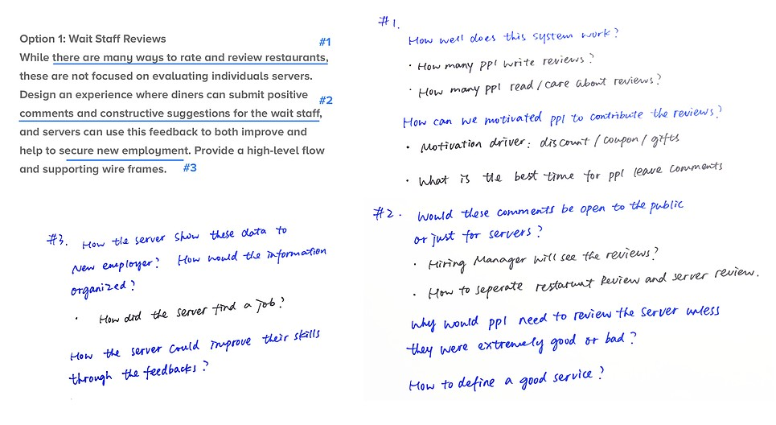
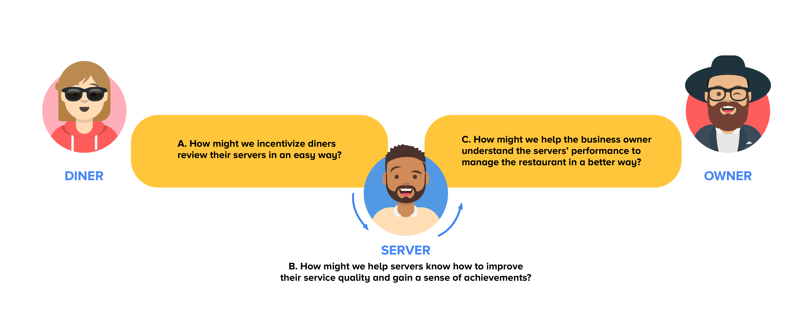
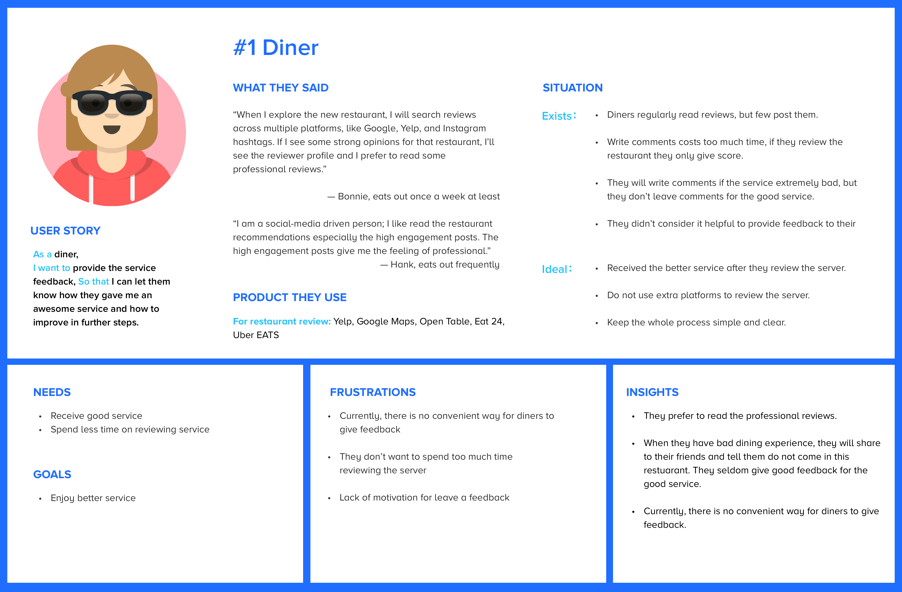
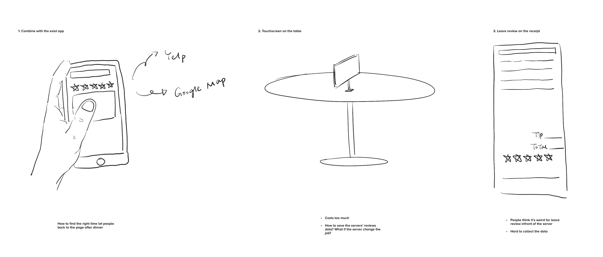
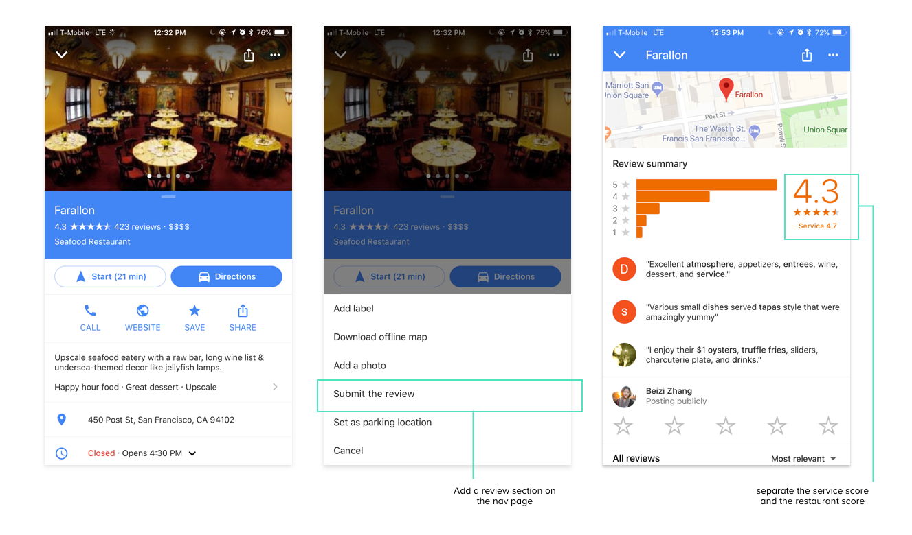
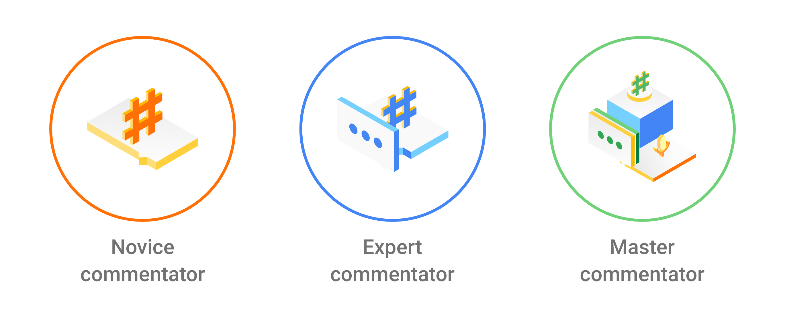
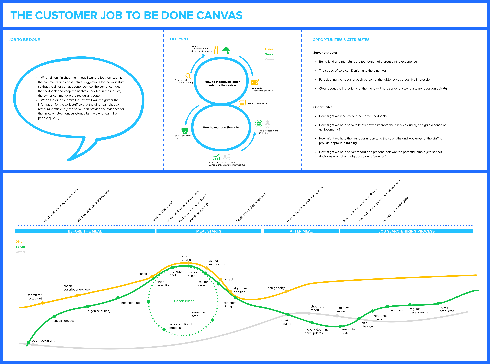

SYNTHESIZE
After doing some primary research, I use jobs-to-be-done canvas help me analysis and synthesize the problem.

Google Design Challenge
Duration：6days“While there are many ways to rate and review restaurants, these are not focused on evaluating individuals servers. Design an experience where diners can submit positive comments and constructive suggestions for the wait staff, and servers can use this feedback to both improve and help to secure new employment. Provide a high-level flow and supporting wireframes.”
Google Design Challenge
DESIGN GOALS
OBJECTIVE
Customer expectations have changed, businesses are now competing for better service.
Why they need customer service review?
Source: https://www.visioncritical.com/customer-experience-statistics/
Why is hard to collect customers reviews?
The platform:
The customer:
Source: https://www.superoffice.com/blog/customer-experience-statistics/
What happened when the data gathered today?
Too many companies squander the treasure that is customer feedback. The solution is systematically measuring the customer’s voice and integrating it into a culture of continuous feedback.
SYNTHESIZE
After doing some primary research, I use jobs-to-be-done canvas help me analysis and synthesize the problem.
DESIGN CHALLENGES
Based on the research and observation, there are three parts of challenges on this project:
Caption: Avatar icon are used from The avatar free library, designed by Pablo Stanley
CHALLENGE A
HOW MIGHT WE INCENTIVIZE DINERS REVIEW THEIR SERVERS IN AN EASY WAY?
WHAT EXIST TODAY?

LEARNING FROM OPENTABLE
Key Learnings:
IDEA GENERATION
Based on the research, people don't like to download the extra app for the restaurant searching and reviews, I decided design combine with the existing apps. People use the digital app for searching restaurant and making reservations. However, few of them will go back to the restaurant page after the dinner, how to find the right time let them leave a review?
Writing reviews is a very subjective thing, based on the user interview, people prefer to see the professional reviews before they go to the restaurant, they like read notes from KOLs. (Key opinion leaders).
After analyzing different review methods, I realize that different method have the different preference. The review page should include several review methods to meet the needs of given positive comments and construction suggestions. I decided to use five-star rating with tags and comments to let people submit their review.
DESIGN
1. The existing page
2. Badges for the local guide
People will review the server after submitting the restaurant reviews. Combine with Google maps; I designed three badges at the local guide system, named as "commentator." Server reviews will not show on the public, and the service score will be separate from the restaurant ratings.
3. Review the server
People will review the server after submitting the restaurant reviews. Combine with Google maps; I designed three badges at the local guide system, named as "commentator." Server reviews will not show on the public, and the service score will be separate from the restaurant ratings.
To understand the user behavior and their thoughts. I asked diners to complete two tasks: 1. Write the review for the restaurant 2. Write the review for the server Once they noticed the server review step, I gave them a "hint" that Simon was their server.
Due to the time limitation, I ask the Uber driver's feedback about the review system; he said: "It's easy to give a low rate, but at least they should tell me why. I really appreciate if they can tell more details about the performance. otherwise, I do not accept the low rates."
People like use tags to submit the reviews, they don't want to write extra words. However, if the service is not good, they will write lots of explanation for the bad service.
ITERATION
CHALLENGE B
HOW MIGHT WE HELP SERVERS KNOW HOW TO IMPROVE THEIR SERVICE QUALITY AND GAIN A SENSE OF ACHIEVEMENTS?
After comparing the different platforms, I choose to design an APP for the server. My goals for the app are:
1. help the server improve the skills

Features:
1. Based on the research, people are stressed about write a public review to the server. Each commentator will show the system name (categorized by fruit, food, and other objects). I use the emoji represents the commentator profile image.
2. The server can know their performance by the point they earned, given them the sense of achievement.
3. Each badge based on the rules for an excellent server. The server can read the tips to let them do better job.
2. help the server secure new employement
eatures:
1. The rating can not represents all the work, give the opportunity to let server see their contribution.
2. Based on the research, the existing server hiring process is too rely on the previous manager's recommendations, it's too subjective. The server can export their contribution as their "portfolio", use the portfolio can let them secure new employment more efficient.
CHALLENGE C
HOW MIGHT WE HELP THE BUSINESS OWNER UNDERSTAND THE SERVERS'
PERFORMANCE TO MANAGE THE RESTAURANT IN A BETTER WAY?
Learn from Zomato, The business owner will hold meet-up for the key opinion leaders. For the owners side, I choose Google my business platform to integrate. It's pretty straightforward, because Google My Business dashboard already offers the functionality required to manage employees and reviews.
Owners can get more control for their wait staffs. Separate the service score and restaurant score, they can make marketing strategy in a better way.
STRATEGY
The ecosystem map
Marketing strategy
1. Online - Social media
Based on my observation, I noticed lot of people really enjoy the game, after they finished game and unlocked the badges, parts of them noticed the local guide features in the Google maps, which means it enlarge the local guide community. For this scenario, the strategy could be show the new badges on the social media and expand the review awareness. It can let more people know their contribution is important to the servers, they will have more empathy and motivation to write the review for the servers.
2. Offline - Meetups
Let the restaurant owners organize some meetups for the diner communities by choosing some local guides. Owners can hear more feedback from the diners; the diner will have more motivation to submit the review, leave a positive comment and construction suggestions.
FURTHER STEPS
After finishing this project, I had the chance to take a look back to this project. I believe there is still a chance to continue to optimize this project in the future.
Conduct field research, learn more about the server and owner. The market of review system is large; it is important to provide customized solutions for different need.
Test with different stakeholders. Due to the time limitation; I only do the usability test on the diner side, it gives me positive feedback and some suggestions. Rapid iteration is one way for the improvement.
Explore more about different parts from different levels of users. Combine with the service blueprint, think more details based on each touch point. like how to set the filter in the review system. How to train the server who does not have any work experiences.


© 2018 Ricky Zhang